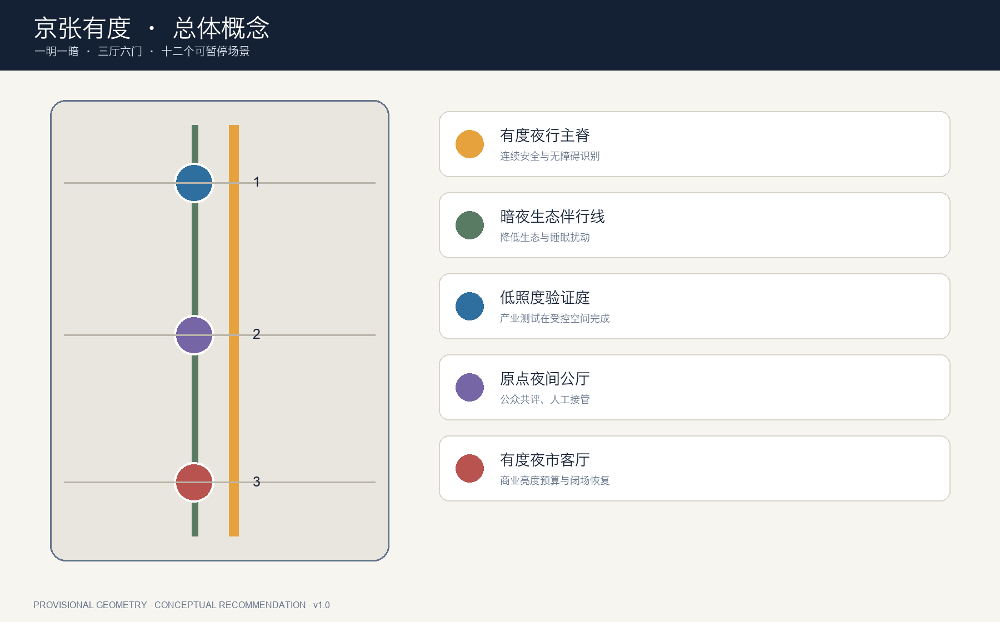
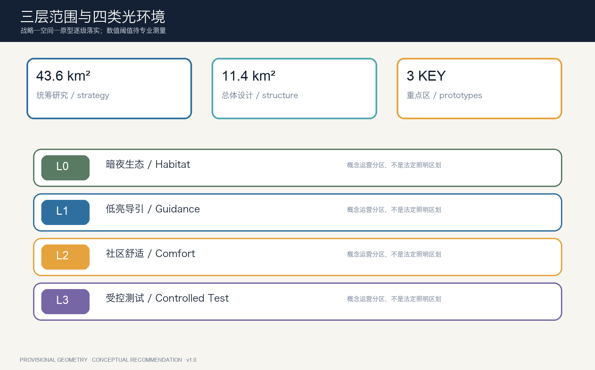
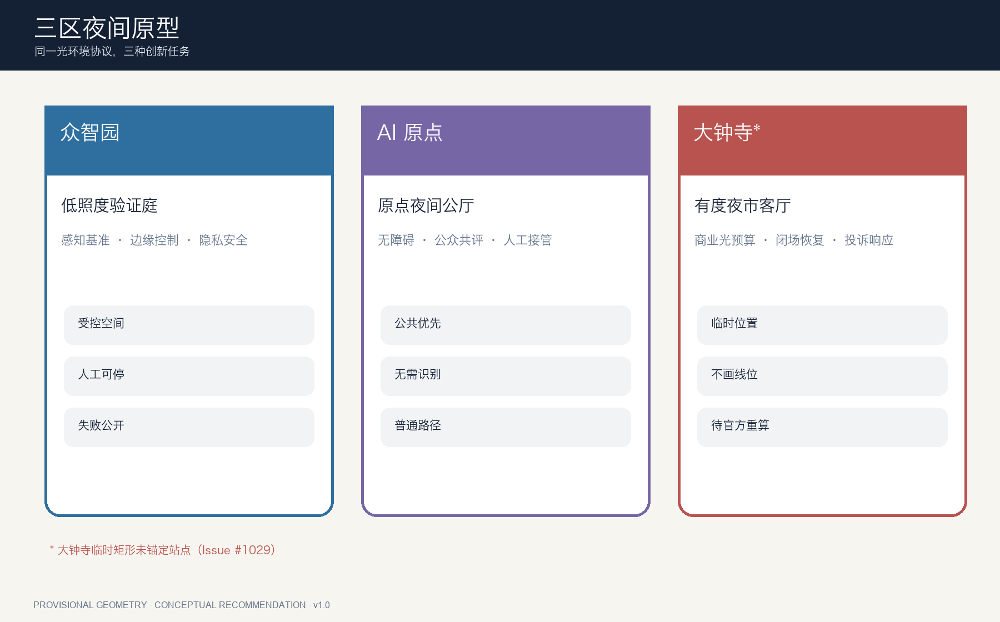
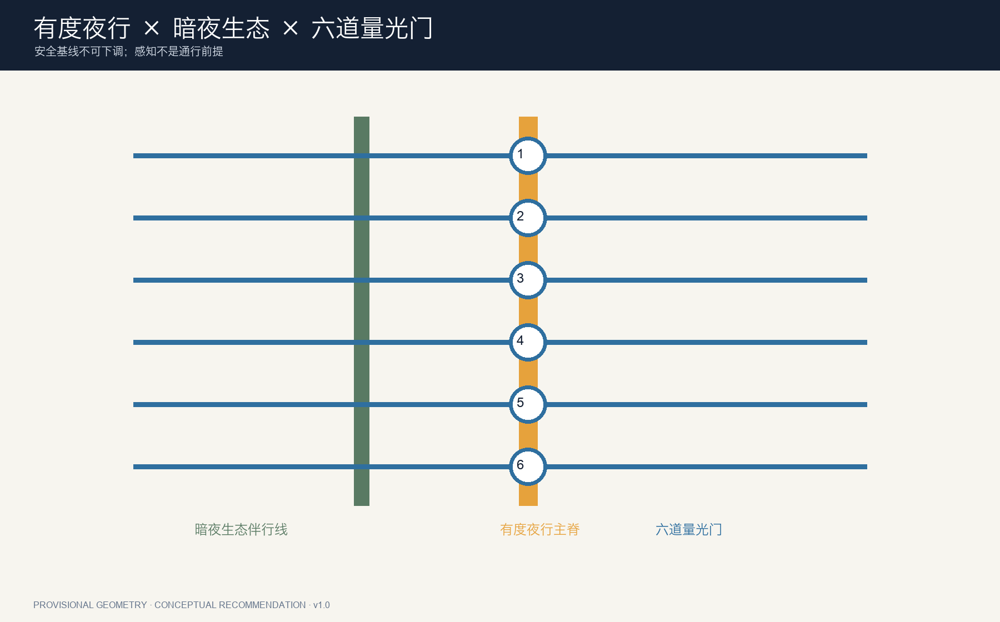
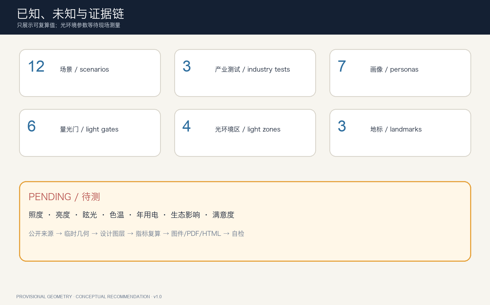

总体概念

不过度照明、不过度感知的 AI 夜间公共带。





照度、眩光、色温与能耗：待现场测量和专业深化。
覆盖公告1.3/1.4/1.5与agent.1—agent.6；本页面为展示层，GeoJSON、metrics与矩阵为审计层。最终状态以self_check.json和CI为准。
来源包括官方征集公告、中国及北京照明管理与标准、CIE立场文件和全球案例一手页面。全球案例只用于机制比较。
临时边界仅供 intake、可视化和复算；大钟寺占位矩形未锚定站点。